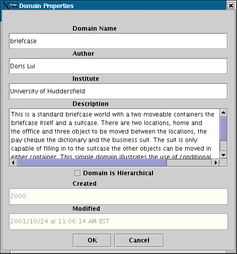
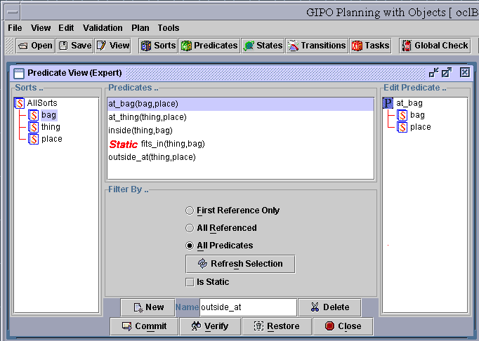
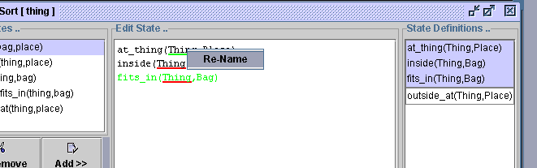
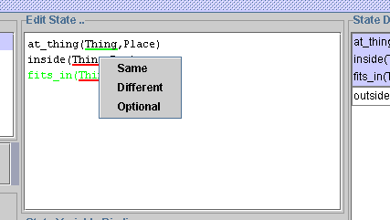
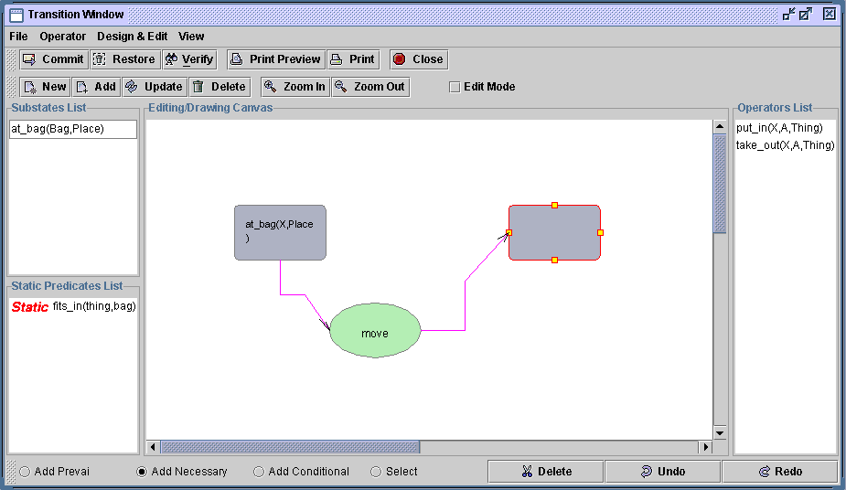
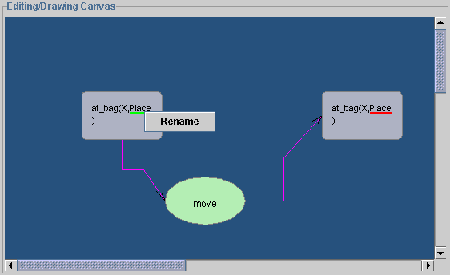
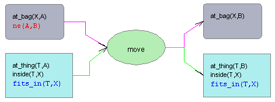
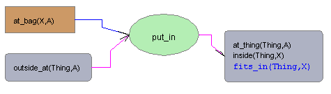
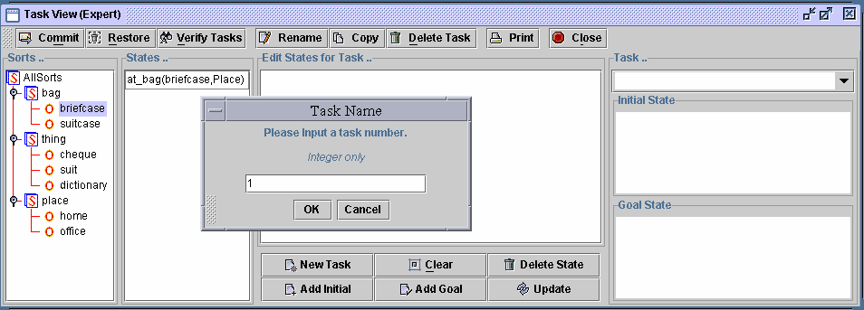
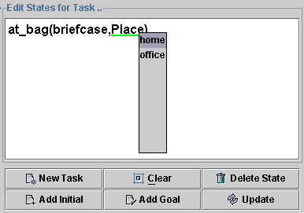

To Create A Domain
Steps:
to create a domain name
to create the sort tree
to create predicates
to create state definitions
to create operators
to create tasks
Create The Domain Name
Select the "new Domain" function under the menu "File".
The domain properties box will appear. You must provide a domain name at
this time, though you may edit the details provided again at a later stage.
The domain name should be a single word beginning with a lowercase letter.
For standard non hierarchical domains leave the "Domain is Hierarchical"
check box unchecked.
Type a name for the new domain, for example, "briefcase".

Figure 1 Create a new domain
Create the Sort Tree
-
Click button "Sorts" on the toolbar to bring up the sort
editing window. Sort is the type of objects.
-
Click on the tree node in order to create it's sub level sort/object.
-
Type string text into the text box "Sort name", then click add button
to add the new sort to the sort tree.
-
After clicking on the tree node, type an object name in the text box
"Object Name", the click on the button "Add Object" to add this new object
to the sort tree.
-
Repeat above procedure to create 3 sorts: bag, thing, place. Under
sort "bag", there are two objects defined as "briefcase" and "suitcase".
Define 3 objects for sort "thing": "cheque", "suit", and "dictionary".
Two objects "home" and "office" for sort "place".
-
sorts/objects can be moved to the other branches in the tree window
by drag and drop.
-
When everything is ready, click "Verify" button to verify sorts. If
all sorts are valid then click "Commit" button to add these sorts to the
"briefcase" domain.
-
FinallycClose the "Sort View" window.

Figure 2 Editing sorts
Create the Predicates
-
Click "Predicates" button on the toolbar.
-
Type "at_bag" as a new predicate's name in the text field labelled
"Name". Click button "New", then this predicate will appear in the "Predicates
... " window, and also appears in the "Edit Predicate" window.
-
To build members of the predicate, drag "bag" then "place" from the
sort tree window to the new created predicate in the "Edit Predicate" window.
The order of the members will depend on where it's been dropped.
-
When editing an existing predicate, select the predicate from the predicate
list, then it's content will appear in the edit window. Repeat previous
procedure to edit.
-
Repeat previous procedure to built 5 predicates, at_bag(bag,place),
at_thing(thing,place), inside(thing,bag), fits_in(thing,bag), outside_at(thing,place),
shown in the following figure. Select the predicate "fits_in(thing,bag)",
click the check box "Is Static" to make it static.
-
To delete a predicate, first select it from the list, then click on
the "Delete" button.
-
To rename a predicate, first select the proper predicate to bring it's
content to the edit window. Gently left click on the node once, the predicate
name node will be changed to the editable mode. Press return when the edit
is complete to update the predicate.
-
To delete a predicate argument/member select the predicate to bring
it's content to the edit window. Select the member to be deleted then right
click to show the edit popup menu. Click on "cut" to confirm.
-
To reorder a predicates members/arguments, first select the proper
predicate to bring it's content to the edit window. Use drag and drop to
reposition the arguments.
-
When all editing procedures are finished, click "Verify" button to
verify predicates. If all predicates are valid then click "Commit" button
to add these predicates to the "briefcase" domain.
-
Close the "Predicate View" window.

Figure 3 Editing predicates
Create the State Definitions
-
Click "States" button on the toolbar to bring up the "State
Edit" window (Figure 4).
-
From the "Sort Tree" select a sort of a kind of object where the objects
will change state as a result of applying actions during plan execution.
Select "thing".
-
From the predicate list, select a predicate "at_thing(thing,place),
click "Add" button to add it to the "Edit State ..." window (edit window).
The
selected predicate must refer to the selected sort.
-
Repeat the previous procedure to add all essential predicates to the
edit window for form a new complete state. For this case add predicate
"inside(thing,bag)" and fits_in(thing,bag) to the edit window.
-
Click on the variables of a predicate in the edit window will highlight
this variable with green underline, other associated variables (with same
sort) will be also highlighted but with red under line.
-
Right click on the green underlined variable will bring up a menu to
rename this variable (Figure 5).
-
Right click on the red underlined variable will allow user to choose
from three options: same, different, optional (Figure 6).. Choose "same"
will set this red underlined variable to be the same as the green underlined
variable; Choose "different", an input box will appear to ask for a new
name if the red underlined variable is currently the same the green underlined
variable, and a "ne(red underlined variable, green underlined variable)"
will be added automatically; Choose "optional", an input box will appear
to allow user to type in a new name, but no "ne" clause will be added.
-
To remove a predicate from the edit window, click on the variable of
the predicate, then click on the "Remove" button.
-
For this case , no extra editing require. so click "Add" button to
add new state to the state list on the right hand side of the window.
-
repeat previous procedure, to create another state which only contains
one predicate "outside_at(thing,place)" (see figure 4).
-
When all editing procedures are finished, click "Verify States" button
to verify states. If all states are valid then click "Commit" button to
add these states to the "briefcase" domain.
-
Close the "States View" window.

Figure 4 Editing states

Figure 5 Rename function

Figure 6 Other editing options
Create the Operator Definitions
-
Click "Transitions" button on the toolbar to bring up the
"Transitions" window (Figure 7).
-
Click on the "New" button on the top toolbar or the menu bar (Operator),
a green circle (labeled as "Action ID") will appear on the editing canvas
to represent the head (name) of the operator.
-
Double click on this circle object to bring up a dialog box to rename
the operator to "move".
-
Click on the radio button "Add Necessary", then select the state "at_bag(Bag,Place)"
from the substate list window. Click on the canvas, the left hand side
statement of the necessary condition will appear on the canvas as a gray
round rectangle, in the meantime, the right hand side statement appears
as an empty round rectangle with flashing edges waiting for the user's
input (Figure 7). The content of "Substate List" window has been updated
to the states related to the same sort user just picked. Clicking on the
state "at_bag(Bag,Place)" in the substate list window will specify the
right hand side of the necessary condition and stop the flashing effect.
-
Change to edit mode by selecting the check box "Edit Mode". Drawing
canvas will change to dark green. The system reaches a situation that all
the variables of this operator can now be edited. "Zoom In" and "Zoom Out"
function will help user to adjust the viewing scale.
-
Click on the click the variable "Place" (Figure 8). It will be highlighted
with green underline, all other related (with same sort) variables will
also be highlighted but with red underline. Right click on the green underlined
variable to rename "Place" to "A". Right click on the red underlined variable
will allow user to specify the relationship between the current red underlined
variable and the green underlined variable (Figure 9). Choose option "Different",
then type "B" in the popped input box. The finished transition is shown
in Figure 10.
-
Click on the radio button "Add Conditional", then select the state
"at_thing(Thing,Place), inside(Thing,Bag), fits_in(Thing,Bag)". Repeat
previous procedure to build the operator "move" as shown in figure 11.
-
Click on the "Add" button on the top toolbar to save this operator
to the "Operators list".
-
Repeat previous procedure to build the operator "put_in" (Figure 12)
and "take_out" (Figure 13).
-
Be noticed that to save the operator to the domain for the other tools
to use, "Commit" button needs to be clicked before leave this transition
window.

Figure 7 Creating a necessary
transition

Figure 8 Editing mode: rename
variable "Place" to "A"

Figure 9 Editing mode: specify
right-hand side variable is different from left-hand side

Figure 10 Editing mode: finished
editing one transition

Figure 11 move operator

Figure 12 put_in operator

Figure 13 take_out operator
Create taske Definitions
-
Click "Tasks" button on the toolbar to bring up the "Tasks"
window (Figure 14).
-
Click on the button "New Task", an input dialog box will appear. Type
in a name "1" to represent the new task. then a new task named "oclTask_1"
will appear in the "Task..." combo box.
-
Expend the tree to find the object "briefcase", click on the object,
all related sub states for this object will be partially instantiated and
displayed on the "states.." window (Figure 14).
-
Click the state to bring it to the editing window(Figure 15). Click
on the variable "Place" to highlight the variable with green underline,
in the mean time any associated variables (with same sort) will be highlighted
with red underline (not in this case). Right click on the green underlined
variable, a popup list will appear with two options: "home" and "office".
Instantiate the variable by selecting "home" from the popup list. Be noticed
that right click on a predicate (rather than any green underlined variables)
will allow user to delete the predicate;
-
Click button "Add Initial" to add the current edited state as one of
the initial states.
-
Repeat previous procedure to build initial and goal state as shown
in Figure 16.
-
When all editing procedures are finished, click "Verify Tasks" button
to verify tasks. If all states are valid then click "Commit" button to
add this task to the "briefcase" domain.
-
Close the "Tasks View" window.

Figure 14 Input new task
name

Figure 15 Instantiate states

Figure 16 Content of task1
 back
to the tutorial main page
back
to the tutorial main page